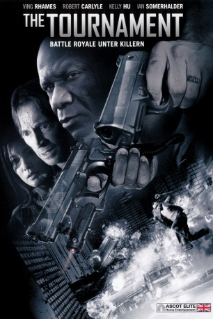

#1699 The Tournament
 gesehen am 01.09.2015
gesehen am 01.09.2015
 
 IMDB-Wertung: 6.1 / 10
IMDB-Wertung: 6.1 / 10  Metascore: 0
Metascore: 0 
Im Abstand von sieben Jahren findet ein Turnier auf Leben und Tod statt. Die 30 gefährlichsten Killer der Welt treten gegeneinander an und demjenigen von ihnen, der als Letzter übrig bleibt, winkt ein Preis von 10 Millionen Dollar. Mittels eines unter die Haut implantierten Peilsenders werden die Teilnehmer überwacht. Doch es läuft nicht alles nach Plan und so gerät ein unbedarfter Priester zufällig zwischen die Fronten, der nun ebenfalls um sein Leben kämpfen muss.
Jahr: 2009
Dauer: 95 Minuten
FSK: 18
Land: England Studio: Ascot Elite Home EntertainmentTonspuren: DTS - ,
Untertitel:
Auflösung: 1080p (1920x1032) Größe: 10229 MB
Genre: Action, Thriller
Regisseur: Scott Mann
Drehbuch: Gary Young, Jonathan Frank, Nick Rowntree
Soundtrack: Laura Karpman
Darsteller:
 Robert Carlyle als Father MacAvoy
Robert Carlyle als Father MacAvoy Kelly Hu als Lai Lai Zhen
Kelly Hu als Lai Lai Zhen- Ian Somerhalder als Miles Slade
 Liam Cunningham als Powers
Liam Cunningham als Powers Ving Rhames als Joshua Harlow
Ving Rhames als Joshua Harlow- Sebastien Foucan als Anton Bogart
 Craig Conway als Steve Tomko
Craig Conway als Steve Tomko John Lynch als Gene Walker
John Lynch als Gene Walker- Rachel Grant als Lina Sofia
 Bashar Rahal als Asa Sadi
Bashar Rahal als Asa Sadi Andy Nyman als Tech Eddie
Andy Nyman als Tech Eddie Iddo Goldberg als Tech Rob
Iddo Goldberg als Tech Rob Scott Adkins als Yuri Petrov
Scott Adkins als Yuri Petrov Bill Fellows als Pub Landlord
Bill Fellows als Pub Landlord J.J. Perry als Montoya
J.J. Perry als Montoya- Mark Stobbart als John
- Kaloian Vodenicharov als Santino Tindillini
 Tom Wu als Tatsumi
Tom Wu als Tatsumi- Julian Vergov als Syndicate Guy
 Velizar Binev als Dead Assassin
Velizar Binev als Dead Assassin- Thomas Craig als (uncredited
 Borislav Iliev als Blonde Assassin , uncredited
Borislav Iliev als Blonde Assassin , uncredited- Nick Rowntree als Eddy Cusack
- Camilla Power als Powers Assistant
- Tamika Cameran als Joshua's Wife
- Marie Hynes als Gorel Modery
- Tony Mooney als Ivan Stoyanova
- Jonathan Frank als Iron Dick McClick
- Petya Dimitrova als Jemima 'Stripper' Jones
 Atanas Srebrev als Nick Frank
Atanas Srebrev als Nick Frank- Gary Young als Garage Attendant
- John Warburton als Bus Driver
- Dustin Ingle als Bill Gaytes
- Victoria Higginson als Cafe Waitress
- Andrey Slabakov als Smoking Assassin
- Velimer Velev als Bald Assassin
- Zarko Karatanchev als 'Longshot' Topuzov
- Michael McCoy als Jedburgh Johnson
- Harry Anichkin als Syndicate Guy
- Yordan Gospodinov als Syndicate Guy
- Kitodar Todorov als Syndicate Guy
- Vicror Boychev als Syndicate Guy
- Erica Wild als Syndicate Girl
- Sophie Wilson als Syndicate Girl
- Hayley Broxup als Syndicate Girl
- Suzanna Anderson als Syndicate Girl
- Paul Lyas als Syndicate Guy
- Cliff Heaton als Syndicate Guy
- Kevin McMahon als Syndicate Guy
- Jo Leith als Syndicate Girl
Datei: X:\FSK18-2000-2009\Tournament, The (2009, FSK18, 1920x1032).mkv seit 06.08.2015
Festplatte: FSK18
 Es gibt insgesamt 106 Filme in der Gruppe 'FSK18-2000-2009'
Es gibt insgesamt 106 Filme in der Gruppe 'FSK18-2000-2009'